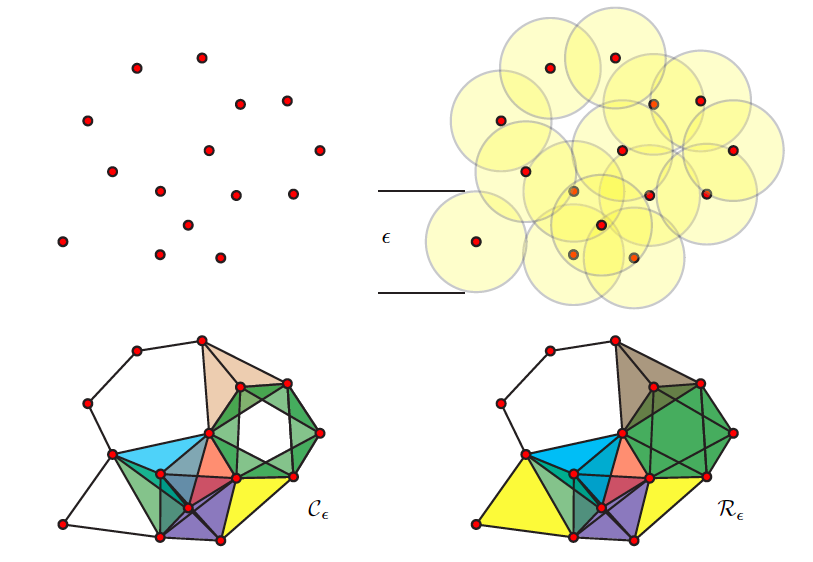
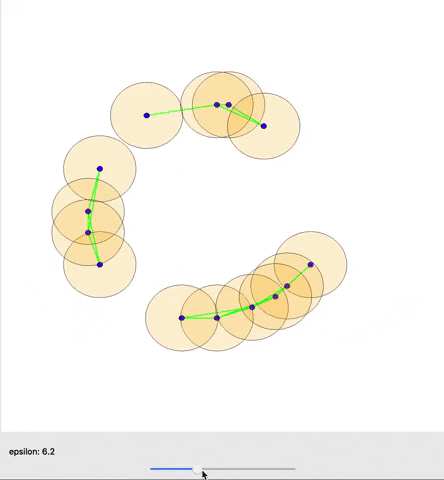
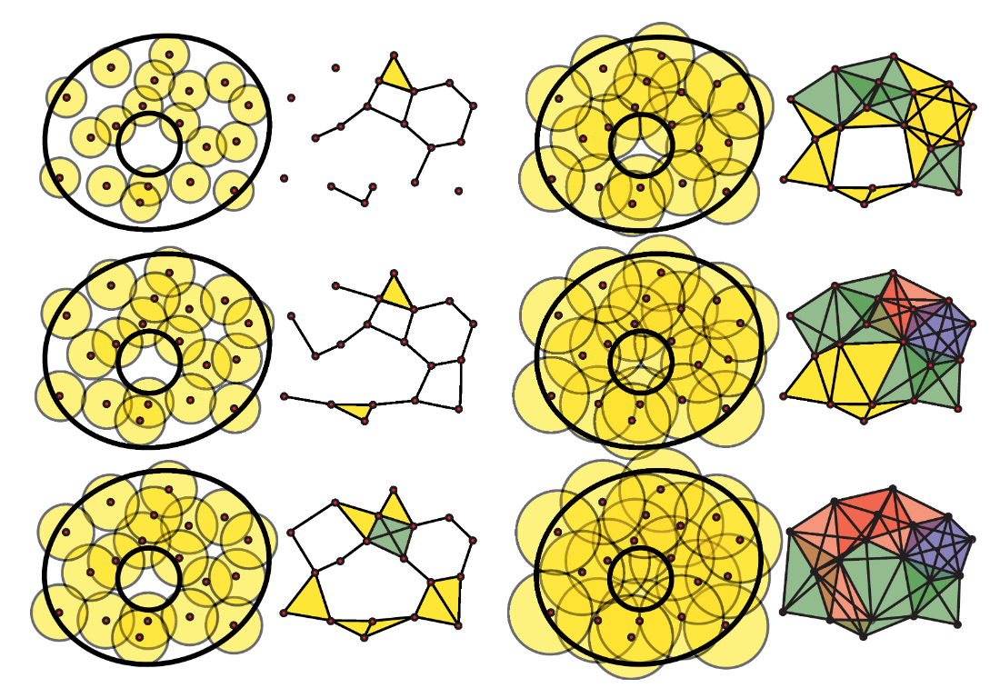
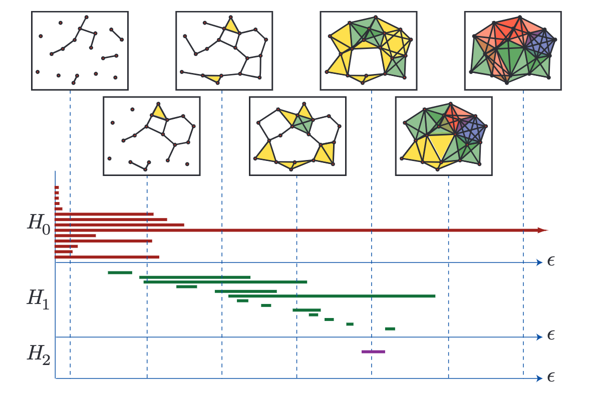
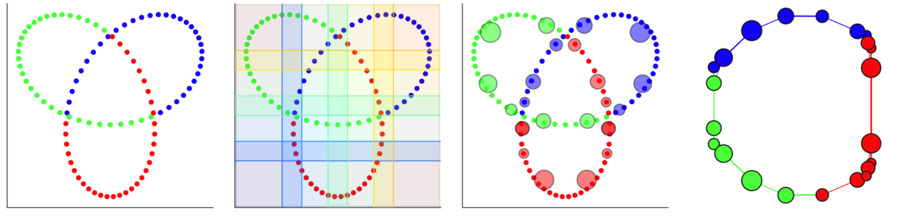
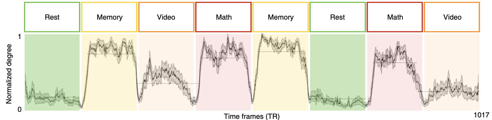
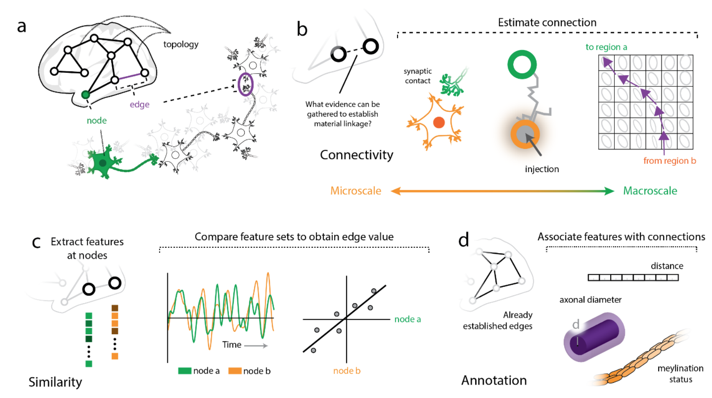

Mapper for Neuroimaging
Mapper for Neuroimaging
Topological data analysis (TDA) has seen growing interest in a number of different fields including neuroimaging. Here I will broadly outline TDA, delve into more detail with one specific method called Mapper, and discuss how these methods are of particular use in the field of neuroimaging.
The Challenge
fMRI brain data can be very high dimensional and at times, messy. Most commonly used analyses involve averaging or collapsing over time or events (GLM, FC, etc) or across space (ROIs, parcellations). These methods are unquestionably useful, but they inevitably incur the loss of some temporal and/or spatial information. Recently, there has also been a push towards longer collections of data from fewer participants to better examine individual brain activation along with continued interest in both more naturalistic designs and pairing behavioraly relevant and phenotypic information to fMRI data.
The Answer: TDA?
Through all of the various analysis methods used in neuroimaging, what we often want to do is make some observation or comparison of brain activation across conditions, individuals, or populations, and to learn something new and exciting about the brain along the way. TDA is an interesting and relatively new method to explore here.
TDA is a branch of applied mathematics that uses concepts from algebraic topology with the goal of analyzing high dimensional data. The basic motivation here is that all data has an inherent shape which may contain useful information, so why not study this shape to gain a better understanding of the data?
Definition: Topology is the study of shape properties that are preserved under continuous deformations. The classic example of this is the donut and the coffee mug. Topologically, these 2 shapes are the same, as one can be deformed into the other while maintaining 1 hole (the hole in the center of the donut and the hole in the handle of the coffee mug.
 The classic example of a donut morphing into a coffee mug. source: wikipedia
The classic example of a donut morphing into a coffee mug. source: wikipedia
If you think of your dataset as a cloud of points, one way of approaching this inherent shape information is by connecting these points and creating a graph. There are different ways to connect the points, but a simple approach is to choose a distance ε and say that all points that are within this distance of one another should now be connected. The result is a graph (often, actually a simplicial complex) from which different features or descriptors can be measured or inferred.

(source: Ghrist, 2008)The graph as a whole can be examined in terms how many connected components it has or how many holes exist (simplicial homology) within those components. Different nodes in the graph might also be queried based on how many connections they have to other nodes (their degree) for example. One important concept from TDA is persistent homology; essentially, as you change the distance that you set to initially connect your points (ε), how does the number of components or number of holes change or persist.

A cool gif showing how links between nodes are formed as epsilon is varied. (source)
A great illustration from Ghrist, 2008 illustrating graphs generated with different epsilon values.A snapshot of this persistent homology can be visualized with a barcode graph as shown below:

A barcode graph from Ghrist, 2008. H0-3 (Y-axis) are the Betti numbers of this topological space where H0 refers to the connected components, H1 refers to holes, and H2 refers to fully enclosed voids/cavities. Epsilon increases along the x axis and different components, holes and voids appear and dissapear. At the far right, only one component remains with no holes or voids present.But wait, what about Mapper?
Now that you have a rought grasp of TDA, this brings us to Mapper, another method of reducing high dimensional data to a more simple topographical map. Here I will outline the steps of the Mapper algorithm:
-
A lens is used to map the data into a lower dimensional space. Methods like PCA, tSNE, UMAP, or any other dimensionality reduction tool can be used. You can even use an existing dimension of the data for this purpose if desired.
-
A cover is constructed. This cover partitions the low dimensional space using overlapping strips, cubes, or hypercubes.
-
Clustering (with any algorithm of your choice) is performed within each partition. *An important note here is that the points within each partition are clustered in their original high-dimensional space. This is a crucial point, because it gets around the issue of projection loss, where points which are far apart in high-dimensional space become closer together once projected to a lower dimensional space.
-
A graph is constructed wherein each cluster becomes a node and those points common between clusters create edges between their corresponding nodes.

An example from Dyneusr showing a trefoil knot. 1) 3d points are visualized through a 2d lens. 2) a 2d overlapping cover is applied. 3) partial clustering is performed and the clusters become nodes. 4) Nodes are connected if points are shared between them and the underlying topological structure of the knot is uncovered. Dyneusr features an excellent method of visualizing the steps of mapper.Mapper allows us to obtain a low-dimensional representation of the data which may be easier to understand yet still contains relevant shape (topological and geometric) information from the data. It is flexible in that the lens, cover, and clustering algorithm can all be fine-tuned to fit a particular dataset or problem.
Thinking about this in the context of fMRI
In the context of fMRI, we can apply these TDA methods with a temporal focus (treating each TR as a distinct point) or a spatial focus (treating voxels or ROIs as distinct points).
While many common approaches are focused on space (think functional connectivity), Mapper may be particularly useful when treating each TR as a different point. After generating a graph, one can then see which timepoints are more similar to one another, since nodes in the resulting graph would represent clusters of TRs where the brain has similar activation. The graph can even be stepped through over time (using a tool like Dyneusr) to get a sense for the trajectory of brain activation over the course of fMRI acquisition, perhaps useful for both event related tasks and dynamic naturalistic viewing. (Dyneusr is a great interactive python based visualization tool capable of labeling and visualizing nodes and also stepping through these graphs over time, see their site for some cool examples including visualizations of brain data.)
The resulting graph is a low-dimensional representation of how the brain activation changed over the course of the scanning session. This representation can be qualitatively examined if annotated by features or events or various graph theoretical methods can be applied to quantify properties of the graph.
A great example of a feature that can be quantified from these graphs comes from Saggar et al., 2018 where they examined the mean degree of graph nodes across subjects within a study that included blocks of resting state, a memory task, a math task, and naturalistic video viewing. Using Mapper, they showed that the normalized degree at each time point decreased between blocks and remained low during resting state blocks, accurately capturing event transitions with reasonable temporal resolution.

from Saggar et al., 2018Taking a step back: so you made a graph, what does it mean?
Largely, the meaning of your graph and the constituent nodes and edges of course depend on how the graph was generated, and even with this in mind, it is not always obvious how it should be interpreted.

Illustration of nodes and edges across different scales (from Faskowitz et al, ArXiv)Depending on the modality that one’s data was derived from, nodes in a network model of the brain might be composed of data from single neurons, populations of neurons, or larger regions of interest which themselves might be anatomically or functionally defined. Edges on the other hand may represent connectivity between these elements in the form of synapses at the most local scale, or at larger scales, tractography. Edges can also represent similarity, either structurally (think cytoarchitectonics or gene expression), or functionally over time (as in functional connectivity). Graphs with structurally defined edges may be more straightforward to interpret than those functionally defined. (See Faskowitz et al, ArXiv for further discussion with a focus on edges, how they can and should be analyzed, and what they may mean in network neuroscience.)
In the case of Mapper applied to the data above by Saggar et al., 2018, nodes in their graph may simply represent brain states, as the time points that compose each node had similiar observed brain activation. After annotating their graphs with task labels, they observed that core nodes in their shape graph may represent task-related activation and cognitive effort, and the more peripheral nodes in the shape graph may represent task-unrelated activation. Thinking about their graph in this manner, traversing the embedding space that their graph was derived from may be analagous to observing a trajectory through the latent space of brain dynamics. (See Billings et al., 2021 for further discussion)
What’s next?
TDA, and Mapper more specifically, are exciting approaches that have not yet been fully explored in the context of neuroimaging and network neuroscience. As new studies come out using these methods there is great hope that they may prove useful in characterizing typical and atypical brain function as a means of uncovering neural markers of individual differences. These methods may also be useful for analyzing naturalistic neuroimaging data and large scale individual datasets, among many others.